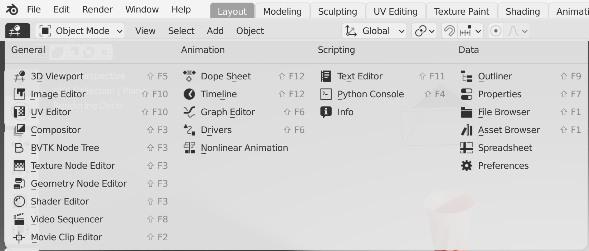
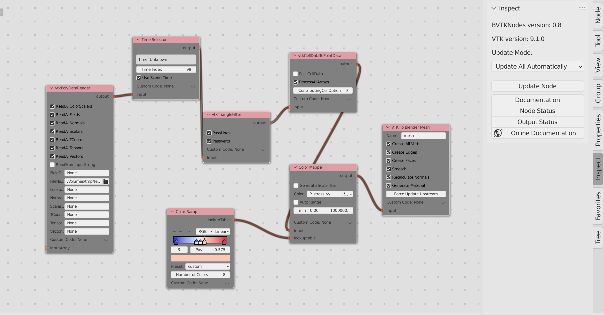
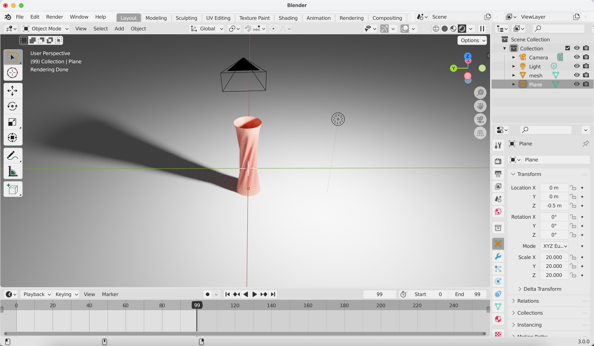

Rendering in blender
Install blender and add-ons
-
Install blender, which can be obtained from https://www.blender.org.
-
Install
VTKinside the blender python environment.Hint: to add vtk support in blender, please visit https://github.com/simboden/BVtkNodes/blob/master/build_vtk.md.
-
Install
BVtkNodesadd-on, which can be obtained from https://github.com/tkeskita/BVtkNodes. Thanks Silvano Imboden (s.imboden@cineca.it), Lorenzo Celli, and Paul Mc Manus for the original work, and Tuomo Keskitalo for functionality extending and maintaining.Hint: to install add-on in blender: go to
Edit→Preferences→add-on, andinstallthe add-on by selecting the zip file downloaded from the github main/master branch.
Rendering
- Switch to the
BVTK Node Treeeditor, and new a node tree similar to the following figure.


- Switch back to the
3D Viewporteditor, and you should get a scene as following.

- Play with the VTK filters and blender feature to polish the scene (color represents the stress). Below is an animation of membrane pulling and twisting, where the result data is simulated and created in
NetDEM.
Hints:
-
Shortkeys:
ctrl+alt+NumPad 0to set the camera to current view;Gto translate the selected object;xto delete the selected object;ctrlorshift+ mouse operalaitons to pan, zoom-in and zoom-out the view. -
Rendering settings: suggest to use
cyclesengine, with theMax Samplesset to10. -
For rendering animaiton: the
Time Selectorfilter will change the file name according to the index of frame. At current stage, the file names should indexed with sequential numbers, i.e.,xx_000.vtk,xx_001.vtk,xx_999.vtk, etc. One can play with the vtk filters for possible entension.